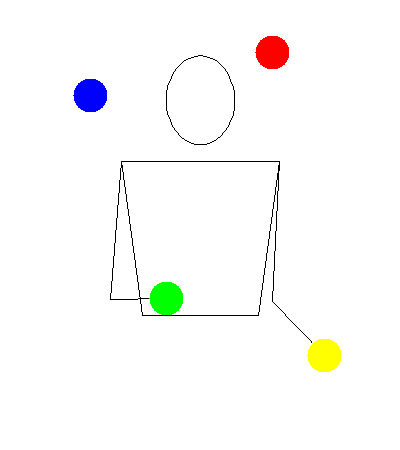
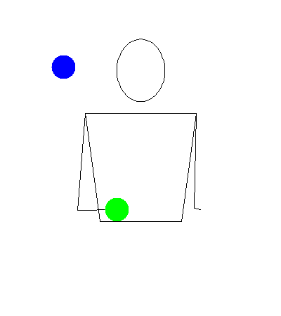
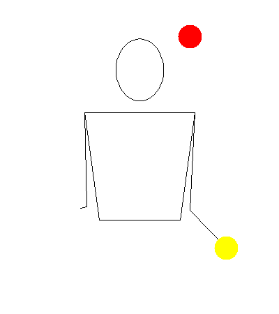

Four

Description
Prerequisites
Tutorial

Tips
- People are generally worse with their non-dominant hand. Practicing that side will help.
- Sometimes, one side will be higher than the other. This will mess up the rhythm. Practice consistency. You can also try to manipulate the height as you go to correct any mistakes.